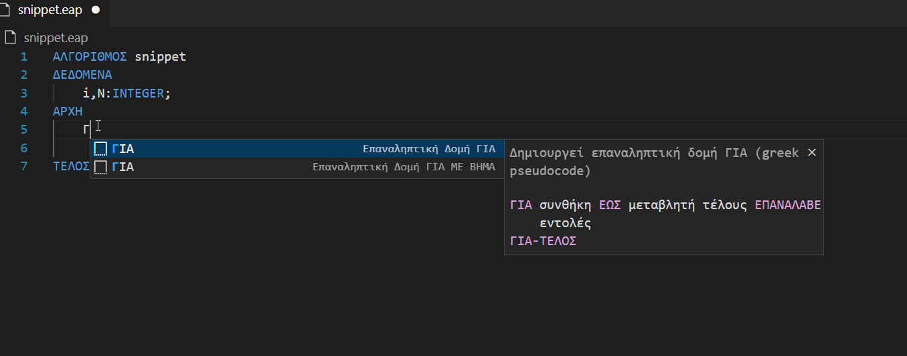
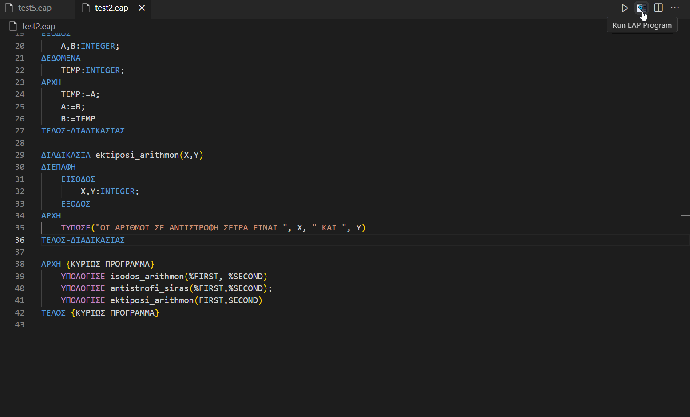

ΕΑΠ Compiler & Visual Studio Code
Το GreekPseudoCode είναι ένα Visual Studio Code extension που έχει σχεδιαστεί για να υποστηρίζει την επεξεργασία κώδικα ψευδογλώσσας, όπως αυτή χρησιμοποιείται από το Ελληνικό Ανοικτό Πανεπιστήμιο (ΕΑΠ). Το extension προσφέρει χρωματισμό συντακτικών λέξεων-κλειδιών, καθώς και αυτόματη διαμόρφωση (indentation) για τη διευκόλυνση των χρηστών.
Χαρακτηριστικά
Συντακτικός Χρωματισμός: Υποστηρίζει λέξεις-κλειδιά όπως:
ΑΛΓΟΡΙΘΜΟΣ,ΑΡΧΗ,ΔΕΔΟΜΕΝΑ,ΕΑΝ,ΓΙΑ,ΕΝΟΣΩ,ΑΛΛΙΩΣ,ΜΕΧΡΙ,ΜΕ ΒΗΜΑ,ΕΠΑΝΑΛΑΒΕ,ΤΟΤΕ,ΣΤΑΘΕΡΕΣ,ΕΙΣΟΔΟΣ,ΕΞΟΔΟΣ,ΕΑΝ-ΤΕΛΟΣ,ΕΝΟΣΩ-ΤΕΛΟΣ,ΤΕΛΟΣ-ΔΙΑΔΙΚΑΣΙΑΣ,ΓΙΑ-ΤΕΛΟΣ,ΤΕΛΟΣ,INTEGER,REAL,CHAR,ARRAY,BOOLEAN.
Αυτόματη Εσοχή (Indentation): Η δομή του κώδικα ευθυγραμμίζεται αυτόματα, με βάση τη λογική των nested loops και συνθηκών.
Υποστήριξη της Ελληνικής Ψευδογλώσσας: Ειδικά σχεδιασμένο για την ψευδογλώσσα που διδάσκεται στο ΕΑΠ.
Εγκατάσταση
Απαιτήσεις
Εγκατεστημένο το Visual Studio Code από το Version 1.6 και μετά.
Υπολογιστής με λειτουργικό σύστημα Windows, Linux ή MacOS.
Ο Compiler δουλεύει μόνο σε Windows.
Βήματα Εγκατάστασης
Κατεβάστε και εγκαταστήστε το extension από το VS Code Marketplace.
Εναλλακτικά, κατεβάστε το
.vsixαρχείο από το repository και εγκαταστήστε το χειροκίνητα με αυτόν τον οδηγό.
Παραδείγματα
Παράδειγμα Συνθήκης

Παράδειγμα Compile & Run
